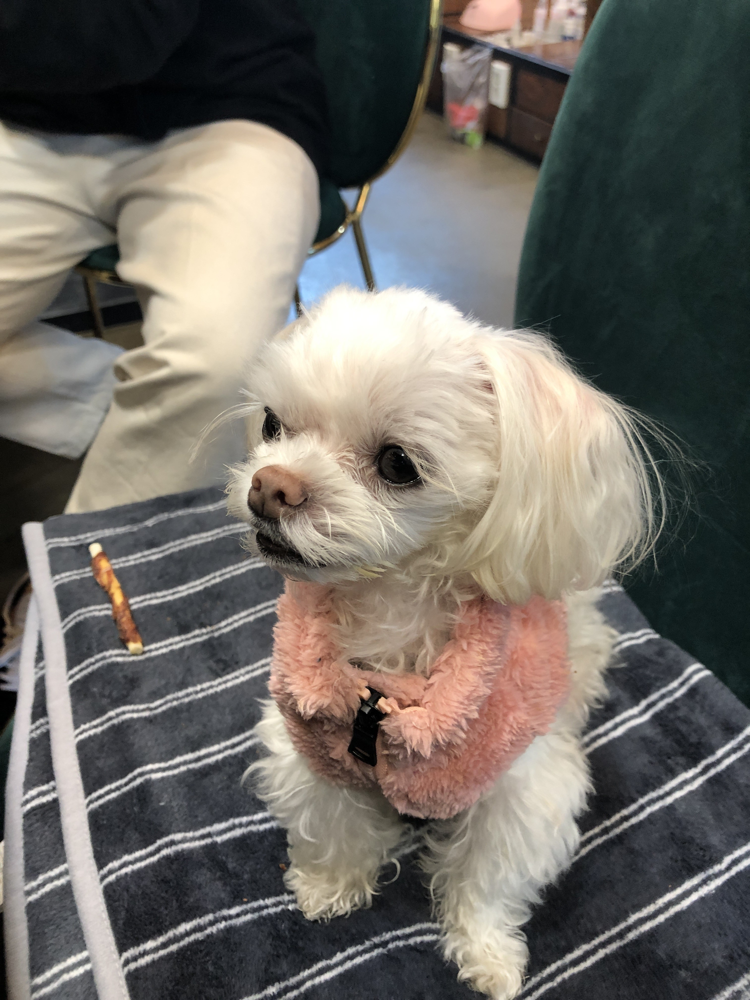
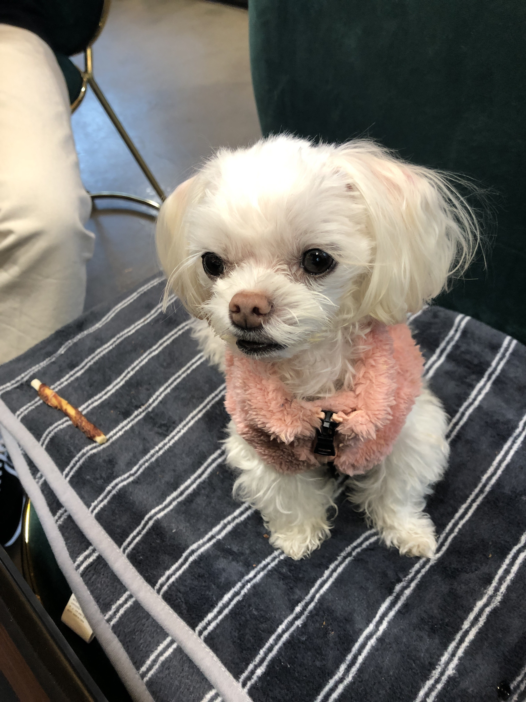

점점 살이 빠지면서 예전의 옷들이 점점 커진 반야
새로운 겨울 옷 장만
분홍이 털 쪼끼
말티즈의 신체 특성상 긴허리로 인해
조끼만 입히니 뭔가 하의를 입은것 같지 않은 허점함은 어쩔수가 없지만
분홍색이 너무나도 이쁘게 잘 어울리는 반야
 
컨디션이 좋은지 간식도 맛있게 잘먹는 분홍반야
활동량이 점점 줄어들고 있지만
컨디션이 좋으면 산책도 잘하는 반야
아장아장 이쁘게 잘 걷는다.
이렇게 남기는 반야 일상 기록
얼마 안남은 주말 저녁 다들 굿밤
반야도 좋은 꿈 꿔~!
에필로그 : 반야와의 첫 만남
반야를 처음 만난 건 작년 늦여름 8월
처음 만나서 산책했던 날을 아직도 잊을수가 없다.
약 1시간 정도 산책하는 동안
정확하게 10여분 정도만 걷고, 50분은 팔에 앉겨서 산책을 했던 그 날…의 기억
강아지를 데리고 산책을 처음 해보는 나에게
다음 날 팔의 근육통 옵션까지 경험하게 해준 반야
올 해 7월 신장암 말기의 시한부 판정을 받고,
하루하루 투병중인 반야의 일상 기록